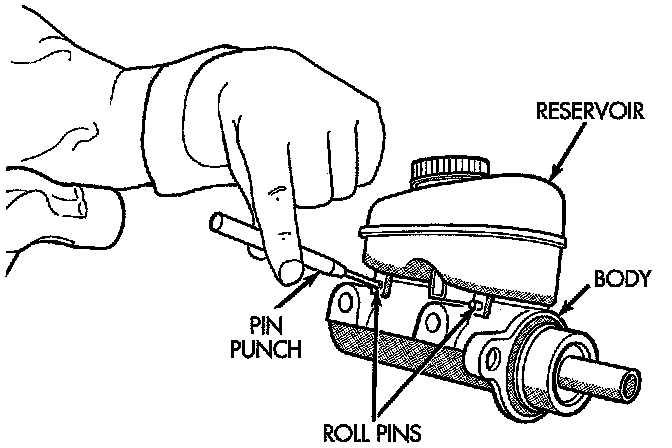
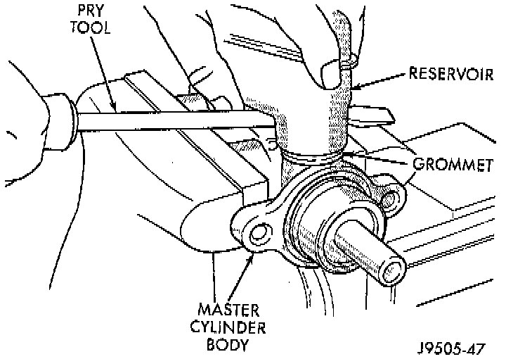
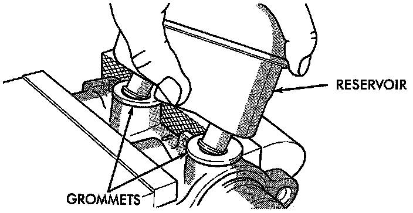
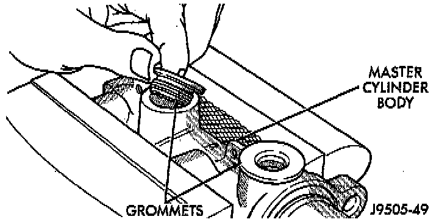
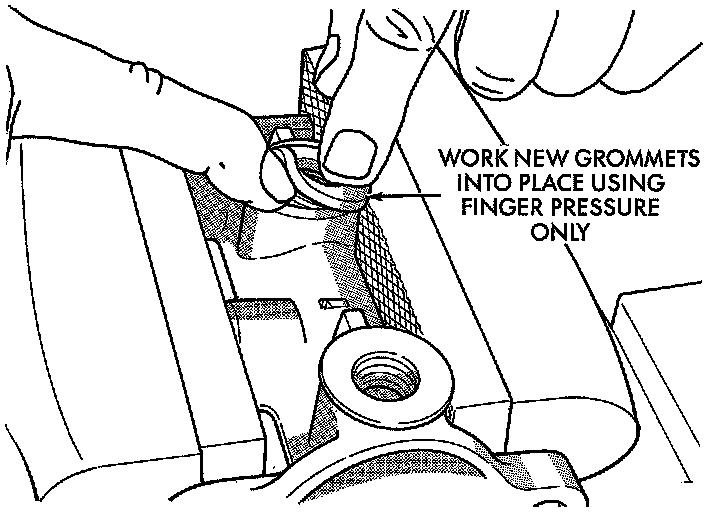

Master Cylinder Reservoir Replacement
REMOVAL1. Remove reservoir cap and empty fluid into drain container.
Brake Fluid Reservoir Retaining Pins:

2. Remove pins that retain reservoir to master cylinder. Use hammer and pin punch to remove pins.
3. Clamp cylinder body in vise with brass protective jaws.
Loosening Reservoir:

4. Loosen reservoir from grommets with pry tool.
Brake Fluid Reservoir Removal:

5. Remove reservoir by rocking it to one side and pulling free of grommets.
Grommet Removal:

6. Remove old grommets from cylinder body.
INSTALLATION
CAUTION: Do not use any type of tool to install the grommets. Tools may cut or tear the grommets creating a leak problem after installation. Install the grommets using finger pressure only.
Brake Fluid Reservoir Grommet Installation:

1. Lubricate new grommets with clean brake fluid and Install new grommets in cylinder body. Use finger pressure to install and seat grommets.
2. Start reservoir in grommets. Then rock reservoir back and forth while pressing downward to seat it in grommets.
3. Install pins that retain reservoir to cylinder body.
4. Fill and bleed master cylinder on bench before installation in vehicle.